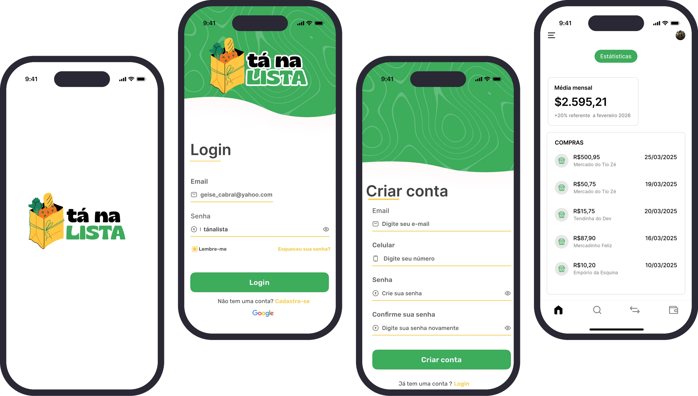

Tá na Lista: diário de bordo.
Um app que aprende com as suas compras do mês e sugere a lista do mês seguinte: o que você mais consome e onde está mais barato. Aqui eu registro cada passo, inclusive o que ainda não sei.
-

feito
O problema
Defini o que o app precisa resolver: sugerir a lista do próximo mês com base no que a pessoa já compra, mostrando onde cada coisa está mais barata.
-
feito
Os primeiros esboços das telas
Abertura, login, criar conta e a tela de estatísticas, com a média do mês e as últimas compras em cada mercado.

-
agora
Conversar com 5 pessoas que fazem as compras da casa
A pergunta que estou investigando
Como os dados das compras entram no app sem dar trabalho?
o que eu descobrir entra aqui
-
próximo
Testar o fluxo com usuários
Colocar as telas na mão de quem faz as compras e ver onde a pessoa trava.
Você faz as compras da casa?
Eu queria muito ouvir como você faz a sua lista. Sua resposta entra neste diário.